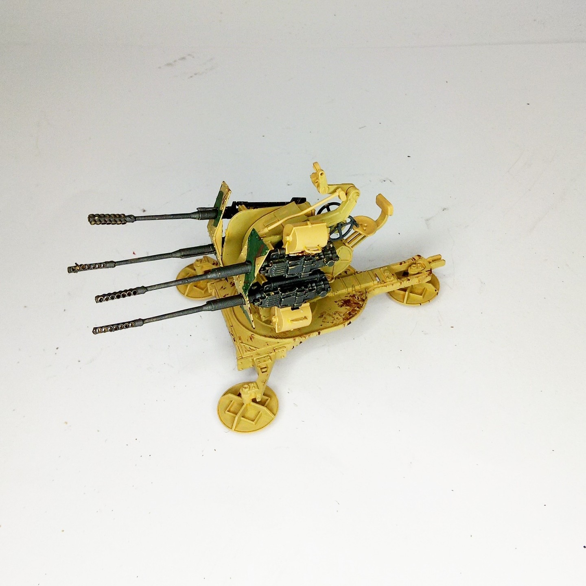

Mezzi militari · scale model archive
3cm Flakvierling 103/38
3cm Flakvierling 103/38 — Kit: Das Werk, Scale: 1/35. Fictitios model, the kit was a bit flimsy (i will fix the barrel alignement) #1/35 #DasWerk

Photo gallery
English description
Fictitios model, the kit was a bit flimsy (i will fix the barrel alignement)
#1/35 #DasWerk
Descrizione italiana
Fictitios modello, il kit fu una bit flimsy (i will fix il barrel alignment).